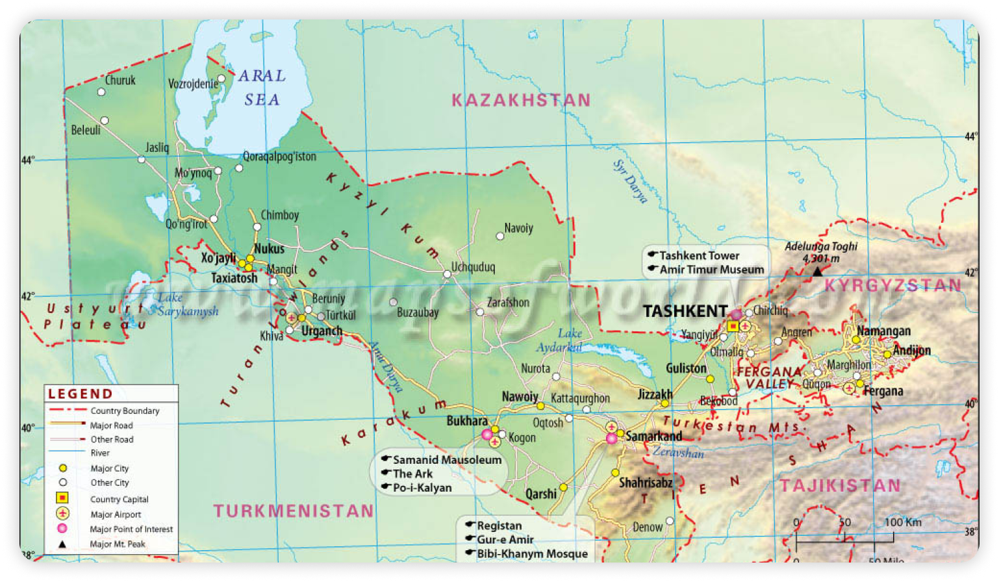

Uzbekistan adalah negara terkurung daratan yang terletak di Asia Tengah, berbatasan dengan Kazakhstan di utara, Kyrgyzstan di timur laut, Tajikistan di tenggara, Afghanistan di selatan, dan Turkmenistan di barat daya. Negara ini dibagi menjadi 12 provinsi dan memiliki sejarah yang kaya sebagai bagian dari Uni Soviet dari tahun 1924 hingga 1991. Ibu kotanya adalah Tashkent, dan bahasa resminya adalah Uzbek.